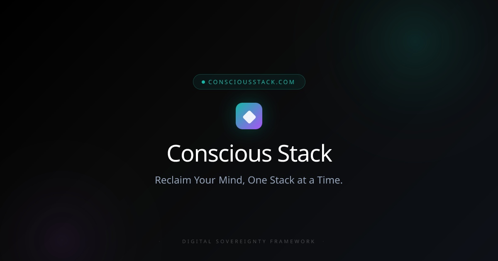

Cyber Collective
Internet Street Smarts — Scaling a Digital Safety Movement to 14+ Countries
$600K+ in philanthropic funding secured and audiences reached across 14+ countries — all through community-first programming.
Read Case Study →
Conscious Stack Design
Building the Movement Infrastructure for Conscious Tech
Embedded as CMO to build brand narrative, community architecture, and practitioner certification for a paradigm-shifting framework.
Read Case Study →
Digital Culturist
0→1 Go-to-Market for an AI Consumer Product
Grew beta community to 150+ members in 7 days through organic channels only — no paid spend.
Read Case Study →
Meta Well
Brand Narrative for a Digital Wellness Platform
Built brand story, editorial voice, and content strategy for a platform helping people make peace with the internet.
Read Case Study →
OurKind
OurKind Therapy — Brand & Community Infrastructure for a Modern Practice
Built brand narrative, community architecture, and digital presence for a mission-driven therapy practice.
Read Case Study →No case studies match your search.